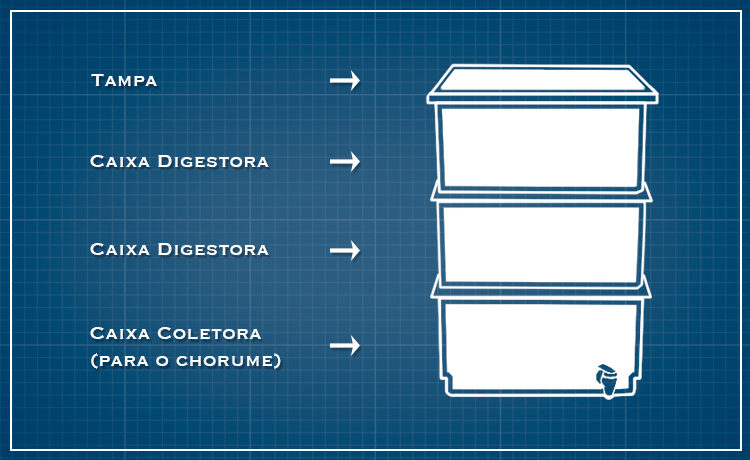
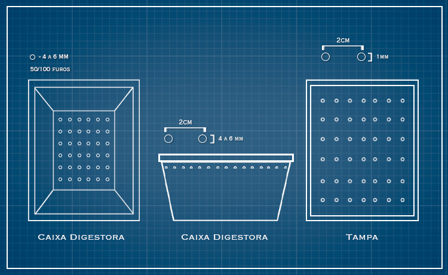

Como você pode fazer:
Descole um recipiente para fazer sua composteira doméstica. Ele servirá para deter os restos de comida, regular a umidade do sistema e bloquear a luz (que é prejudicial para as minhocas). Existem diversos modelos de recipientes que são vendidos no mercado, mas você também pode improvisar um.
O recipiente pode ser uma caixa de madeira que facilita a circulação de oxigênio e absorve a umidade. Lembre-se de utilizar madeira que não foi quimicamente tratada, pois os químicos podem fazer mal às minhocas, além de infiltrar no seu composto.
As caixas de plástico empilháveis, ou baldes também podem ser usados, devendo ser opaco para bloquear a luz. É necessário que as caixas sejam perfeitamente empilháveis, encaixando facilmente umas nas outras, sendo as duas de cima as digestoras e a de baixo a coletora. A última de cima precisa ter uma tampa. As dimensões das caixas podem variar com o tamanho da família e do local disponível para armazenar as caixas. Para um local pequeno é mais comum que se use as de 15 litros, com dimensões de 43 cm X 35 cm X 43 cm, ideal para casas com até três pessoas, com capacidade de 0,5 litro orgânico por dia. Para ampliação de sua capacidade, acrescente caixas digestoras extras.
 Ilustração: Larissa Kimie/Portal eCyleO ideal é empilhar três ou mais caixas, pois enquanto uma é alimentada com resíduos, a outra vai realizando o processo de decomposição e assim alternadamente (caixas digestoras), a última será para coletar o biofertilizante (caixa coletora). Para fazer a composteira é necessário fazer de 50 a 100 furos (varia conforme tamanho da caixa) de quatro a seis milímetros de diâmetro no fundo das duas caixas digestoras. Utilize uma furadeira. Na tampa, é preciso fazer uma fileira com três furos em cada lateral com o diâmetro de 1 milímetro (mm) a uma distância de dois centímetros (cm) entre eles (atenção para que os furos não sejam feitos sobre o encaixe da tampa!). Na parte lateral e superior das caixas digestoras, faça furos em todo o contorno seguindo as mesmas medidas. É importante respeitar essas medidas porque são suficientemente largas para a evasão dos vapores e pequenas o bastante para que as minhocas não fujam.
 Ilustração: Larissa Kimie/Portal eCyleDicas úteis:
A caixa coletora de biofertilizante pode conter uma torneira para saída do líquido ou este pode ser retirado manualmente. O biofertilizante rico em nutrientes, pode ser diluído à uma proporção de 1/5 até 1/10, e ser borrifado nas folhas de sua horta caseira ou nas plantas de sua casa. Compre uma torneira do tipo bebedouro, meça seu diâmetro e faça um furo circular na parte inferior da caixa coletora (última debaixo) do tamanho que seja possível encaixar a torneira.
É útil colocar um pedaço de tijolo que sirva de escada caso as minhocas desçam até essa caixa de baixo, para que não se afoguem no chorume. É importante saber que as minhocas nunca descem da caixa, sempre sobem - se isso aconteceu é porque o ambiente de uma das caixas digestoras não está saudável, então é necessário verificar qual foi o erro.
Coloque a composteira em um local fresco e ventilado para que ele não superaqueça. Adicione uma camada de dez centímetros de húmus de minhoca no chão da primeira caixa digestora. Adquira minhocas californianas (Eisenia hortensis) para sua composteira caseira. Cerca de 450 gramas de minhocas desse tipo é o ideal para começar.
Fontes: https://www.ecycle.com.br/2933-como-fazer-uma-composteira.html